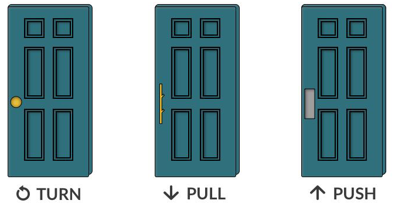

INTRODUCTION:
The concepts discussed here are derived from the book "The Design Of Everyday Things" by Don Norman. Any quoted text comes directly from the book.

“Good design is actually a lot harder to notice than poor design, in part because good designs fit our needs so well that the design is invisible,
serving us without drawing attention to itself. Bad design, on the other hand, screams out its inadequacies, making itself very noticeable.”
— Don Norman
The fundamental principals of interaction are the basis of human centered design, a design framework that revolves around the human perspective.
It is my aim to present the knowledge I learned in this book in an easy-to-understand format, and to inform not only those interested in design, but anyone who
may happen upon this site.
AFFORDANCES:
"The design aspect of an object which suggest how the object should be used; a visual clue to its function and use."
In order to be effective, afrordances must be percieveable. Take a door for example. When you look at a door, you should be able to determine how the door is to be used. Whether to push or pull, and on which side. Affordances help people figure out what actions are possible without instruction. Also, an affordance is a relatioship and depends on both the object and it's user. If an affordance cannot be percieved by the user, a signifiers may be required.
By looking at this door a user should be able to tell that it needs to be pushed, and that it needs to be done from the center.
This door affords pulling because of the presence of the handles. A user should be able to walk up to the door and understand that it is to be pulled without much thought.
